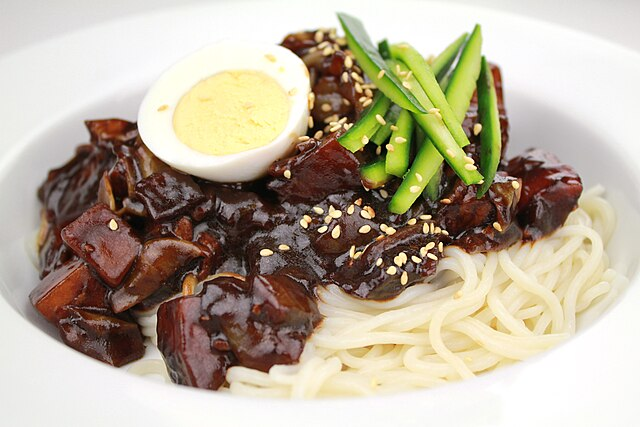
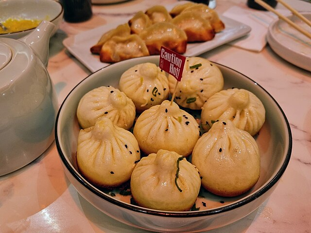
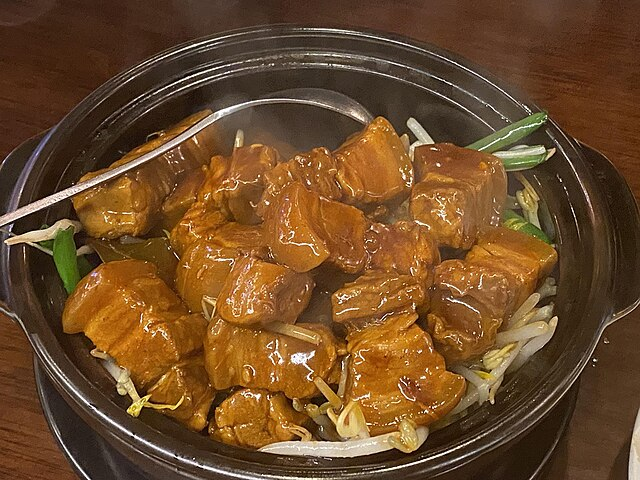
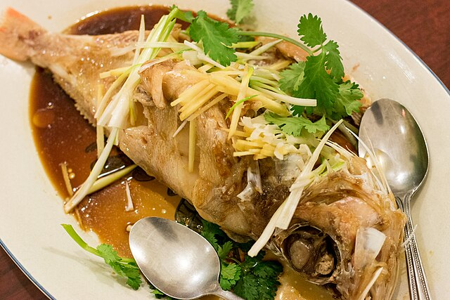
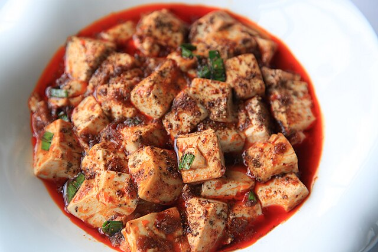
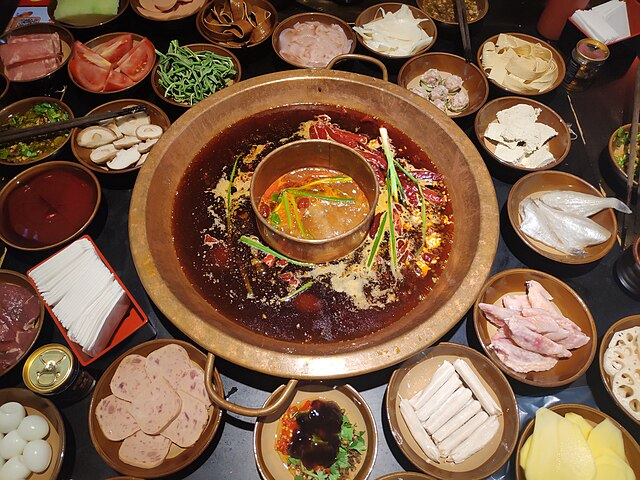

Discover the Great Cuisines of China — each region has a unique history, flavor profile, and iconic dishes.
Click each card to explore cities.
Peking Duck (Beijing)
Beijing’s most iconic dish, featuring roasted duck with crispy skin and tender meat.
Fried Sauce Noodles (Beijing)
A classic Beijing noodle topped with minced pork in rich soybean paste sauce.

Instant-boiled Mutton (Beijing)
Thin slices of lamb quickly cooked in hot broth and dipped in sesame sauce.
Soup Dumplings (Shanghai)
Delicate steamed dumplings with thin wrappers, filled with savory pork and flavorful soup.
Braised Pork Belly (Shanghai)
Sweet-savory pork belly braised with soy, rock sugar, and wine.
Steamed Perch (Shanghai)
Lightly steamed fish finished with hot oil over ginger and scallion.

Spicy Boiled Beef (Chengdu)
Tender beef slices poached in a fiery chili and peppercorn broth.
Mapo Tofu (Chengdu)
Spicy tofu with minced meat, chili, and Sichuan peppercorn.
Hot Pot (Chengdu)
Cook ingredients at the table in a boiling, chili-peppercorn broth.